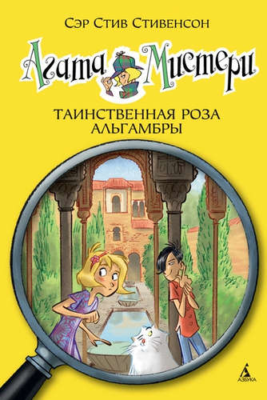

Наделённая потрясающим чутьём и феноменальной памятью, Агата Мистери мечтает стать писательницей. Но это в будущем, а пока она просто превосходная сыщица! Вместе со своим незадачливым братом Ларри, студентом детективной школы, она путешествует по миру, чтобы решать самые запутанные загадки. А помогают им преданный дворецкий, вредный сибирский кот и множество чудаковатых родственников.
Агата Мистери. Таинственная роза Альгамбры
Гранада, Испания. Ларри и Агата отправляются туда, чтобы выполнить, казалось бы, простейшее задание: обеспечить сохранность розы Альгамбры, редкого цветка, выставленного на Международной ботанической ярмарке. Но то, что обещало быть развлекательной поездкой с осмотром достопримечательностей, превратилось в серьёзную рабочую командировку. Удивительная роза неожиданно исчезает, и юным детективам вместе с дядей — танцовщиком фламенко предстоит разоблачить заказчика вероломного похищения…